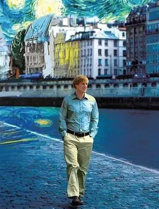

第六版
第六版

在这样一个淅淅沥沥下着小雨的夜晚，独自呆在宿舍，重温一部《午夜巴黎》，萨克斯悠扬，夜晚也变得甜蜜起来。
海明威曾说：“如果你年轻时有幸停留巴黎，那么你的余生无论去往哪里，巴黎永远会与你在一起，因为它是一席流动的盛宴。”
孤身一人的吉尔，游荡在浪漫的巴黎夜色。遥远的钟声一层层荡漾开来。老爷车从转弯处驶来，满载着笑声。”Come on!Buddy!Come on!”车上的人热情邀请男主，盛情难却，男主上了车。菲茨杰拉德夫妇，海明威，波特……男主怀疑又兴奋地看着这一切，发现自己穿越到了巴黎的20年代。
所遇皆名人，去往皆热闹，伴随着不紧不慢的高音萨克斯风，巴黎风情徐徐展开。让人流连忘返，果真是流动的盛宴。此情此景，有一种躬逢盛世的感觉。
“我是吉尔·彭德
我刚才和海明威和毕加索在一起
帕布罗·毕加索和欧内斯特·海明威
我是帕萨迪纳的吉尔·彭德
童子军 大一英语不及格
小人物吉尔·彭德拿自己的小说
给歌特鲁德·斯泰因过目
那个姑娘真是太
太可爱了”
夜深人静，吉尔躺在床上，眼睛睁得大大的，难以置信地回忆着自己的神奇经历。
当男主和喜欢的女孩歌迪亚在巴黎安静的街头，一辆马车哒哒走来，两人被热情地邀请上车，驶向了19世纪的巴黎。在那里，他们遇到了画家高更、德加。歌迪亚认为这里才是她的“黄金时代”。决定留在这里。挥挥手说再见，男主回到了现代。
独自走在亚历山大三世大桥上，又偶遇到了中古店的法国女孩布里埃。这时天空下起了雨，女孩在雨中神采飞扬地说：“实际上，雨中的巴黎最美了。”
简简单单的一部小电影，没有繁冗的情节。人与人之间有一种恰到好处的疏远感。不过多干涉他人的生活，如果要说再见，就挥挥手，然后相忘于江湖。情节不紧不慢地推进，波光粼粼的塞纳河，熠熠生辉的埃菲尔铁塔，可以说是把浪漫贯彻到底。
且不谈寻找黄金时代的宏大命题，我喜欢这个电影给我的惬意的感觉。人物的骨子里都有一种随意与自由。男主从书中读到歌迪亚对自己的喜欢，于是带着耳环穿越去那个时代，和她漫步在巴黎的街头。歌迪亚喜欢19世纪的巴黎，就快乐的投入其中，没有那么多的犹豫，和男主挥挥手道别，即使不会再见，也没有过多离别的伤感与挽留。
另一方面，剧中人又或多或少在逃避自己的时代，寻找着自己的黄金年代。就像未婚妻所说：你爱上的是一个幻想。最终，男主不再等待钟声响起，不再等待那辆穿越的车，选择回到现实。
深有同感。与真实的世界有过一些碰撞后，人也现实很多，我开始不再去苛求与抱怨一些没有的东西，我知道现实。我开始理解一些事情摆脱不了的，于是更加专注在自己拥有的。但并不妨碍我喜欢这短暂的逃避，逃避我的01代码，逃避我庸碌的日常，逃避到过去的某个年代里，逃避到过往的某个记忆里。就像在这样的雨夜，无所事事，蜷在被窝，看一场午夜巴黎。就像在被闹钟吵醒的清晨，一个梦意犹未尽，不想睁眼，想要追溯去寻个美好的结局。
这样美好的电影，像一小炉火，风雪夜里，给人心灵的慰藉。
短暂的逃避过后，再回到现实，心中却多了一份温柔与力量。